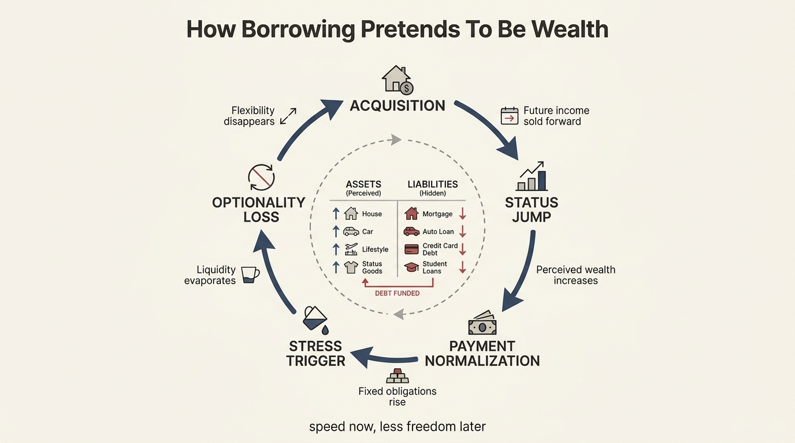
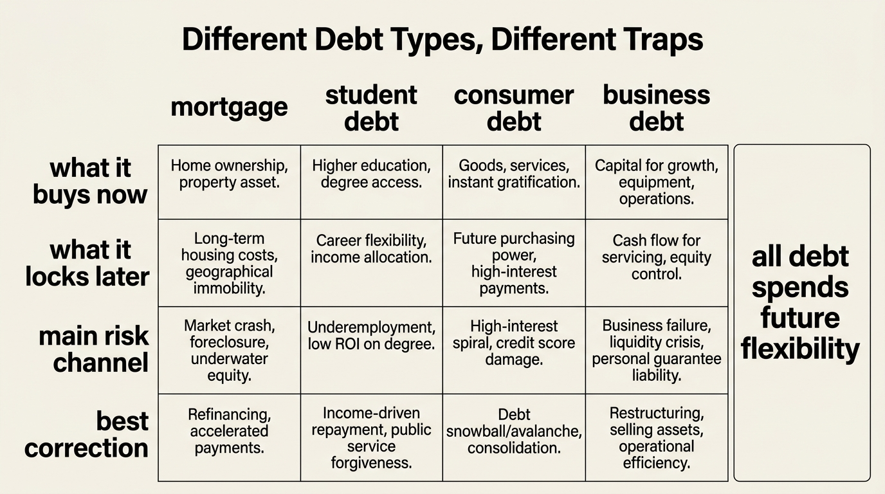

The Debt Illusion Cycle
Debt is persuasive because it lets households import tomorrow's income into today's identity. The purchase arrives now. The status shift arrives now. The lifestyle proof arrives now. The repayment drag, refinancing dependence, and reduced mobility arrive later, in smaller increments, until what looked like wealth starts behaving like a trap.
This is the debt illusion. Borrowing does not only fund assets. It can also manufacture a false reading of financial strength by converting access into ownership and cash-flow expansion into apparent prosperity. During the easy phase, the household feels richer because consumption, housing quality, or business scale has already moved. During the hard phase, the same household discovers that its future choices were partly sold in advance.
Core thesis: debt becomes an illusion when households price the acquired asset or lifestyle and underprice the future cash-flow obligation, refinancing dependence, and option value they gave away to obtain it.

Why Borrowed Capacity Looks Like Wealth At First
Debt changes the visible side of a balance sheet immediately. The house gets larger. The neighborhood changes. The degree becomes attainable. The business opens sooner. The car becomes more impressive. In every case, the asset or consumption object becomes socially legible before the financing burden becomes psychologically real.
That mismatch is why debt so often escapes proper scrutiny in households that would otherwise call themselves disciplined. People evaluate the asset in gross terms and the payment in marginal terms. The object becomes part of identity. The monthly obligation becomes background infrastructure. This is how expensive commitments get normalized long before the household has asked whether the new structure actually improved resilience.
Debt Service Converts A Story Into A Constraint
The illusion begins to break when mandatory payments start competing with flexibility. At that point debt stops looking like a one-time enabler and starts revealing itself as a recurring claim on future income. The relevant variable is not only total debt. It is the share of disposable income that must be committed before the household can respond to a layoff, a move, a health shock, or a market drawdown.
This is why the Federal Reserve's debt service framework is so useful. It measures required debt payments relative to disposable income rather than asking whether a household merely owns something valuable. Required payments are operational. They determine how much slack remains after the past has already been financed.
| Phase | What households notice | What they underprice |
|---|---|---|
| Acquisition | Immediate increase in consumption, status, or productive capacity | Long-duration payment claim on future income |
| Normalization | Monthly payment begins to feel routine and manageable | Loss of flexibility if income or rates change |
| Stress | One setback makes the fixed obligation feel much larger | Correlation between debt, job risk, housing risk, and market risk |
| Repair | Household cuts spending or sells assets to restore margin | Opportunity cost of years spent serving the old decision |
Refinancing And Low-Rate Memory Keep The Illusion Alive
Debt decisions are often justified with backward-looking memories. Households remember the rate they had, the payment they tolerated, or the appreciation they experienced in the last cycle. They then project those conditions into the next commitment. That is how apparently manageable leverage survives changes in rates, insurance costs, taxes, repair burden, or labor-market uncertainty.
In this sense the debt illusion is not only about arithmetic. It is about regime confusion. A household built for falling rates and rising assets may fail when refinancing becomes expensive, transaction volume collapses, or income volatility rises. The same nominal debt can feel light in one regime and suffocating in another because the surrounding option set has changed.
Different Debt Types Fail In Different Ways
Mortgage debt can trap mobility. Student debt can postpone household formation and savings margin. Consumer debt can convert short-term consumption into expensive, compounding fragility. Business debt can be productive when matched to real cash generation, but destructive when it finances optimism rather than durable unit economics. The category matters because the pathway from leverage to fragility is not uniform.
What the categories share is future claim priority. Every debt instrument takes part of tomorrow's cash flow and assigns it in advance. That does not make debt inherently bad. It does mean that debt should be read as a transfer of option value. The household gets speed now and less freedom later. Sometimes that exchange is rational. Often it is mispriced.

What A Decision-Grade Debt Framework Looks Like
A decision-grade framework asks harder questions than whether the payment fits this month. How much of the household's future earnings power is already committed? How exposed is that commitment to rate resets, job concentration, or asset-price weakness? If the debt finances an asset, how liquid is that asset after transaction cost and stress discount? If the debt finances consumption, what remains after the consumption is gone but the claim is still active?
This is also why debt belongs on the same map as The Asset-Rich, Cash-Poor Paradox, The Opportunity Cost of Cash, and The Mortgage Lock-In Trap. The issue is not only whether a household borrowed. It is whether the borrowing reduced optionality faster than the purchased asset or experience increased durable resilience.
- Measure required debt service against disposable income before debating expected returns on the financed asset.
- Model the debt under worse rates, lower income, and delayed sale timing, not only under the current base case.
- Treat illiquid collateral with a haircut rather than at headline appraised value.
- Separate productive leverage from identity leverage. They do not deserve the same tolerance.
- Price the option value of staying mobile, not only the appeal of owning more now.
The Real Cost Is Often Invisible Until It Is Strategic
Many debt mistakes do not show up first as default. They show up as forgone decisions. The household does not change cities because the mortgage is awkward. It does not leave the job because the payment stack is too rigid. It does not rebalance because selling the financed asset would crystallize a loss. It does not save because debt service already absorbed the margin. In other words, the cost appears as trapped agency before it appears as formal crisis.
That is why the debt illusion cycle is a wealth question rather than a budgeting question. Wealth is future choice. Debt becomes dangerous when it quietly purchases present appearance at the expense of future choice capacity.
Known, Inferred, And Unknown
| Category | Assessment |
|---|---|
| Known | Household debt service is a real structural burden because required payments reduce disposable income available for saving, mobility, and shock absorption. |
| Known | Federal Reserve and New York Fed data continue to show that large household liabilities, delinquency shifts, and debt-to-income patterns remain central to understanding balance-sheet fragility. |
| Known | Households frequently evaluate debt through monthly-payment framing rather than through full-cycle optionality, refinancing exposure, and downside correlation. |
| Inferred | Many leverage mistakes persist because the social and psychological reward of immediate asset access is stronger than the delayed perception of option value being sold away. |
| Unknown | Which consumer-finance tools best translate debt-service math into behavior change before households enter the higher-fragility phase of the cycle. |
Source Frame
This analysis uses the Federal Reserve's definition of the household debt service ratio, which measures required household debt payments against disposable income rather than treating gross asset ownership as the full story.
For current balance-sheet context it draws on the New York Fed's Household Debt and Credit reporting, which tracks how mortgage, credit-card, student-loan, and other borrowing burdens evolve over time.
For household fragility context it also uses the Federal Reserve's Survey of Household Economics and Decisionmaking, which remains one of the clearest windows into how thin many real emergency buffers are beneath headline asset values.
Stress-test the lifespan side of this balance-sheet story.
Open the matching LifeMeter scenario with a prefilled planning profile so the wealth case and the health-runway case can be read together.